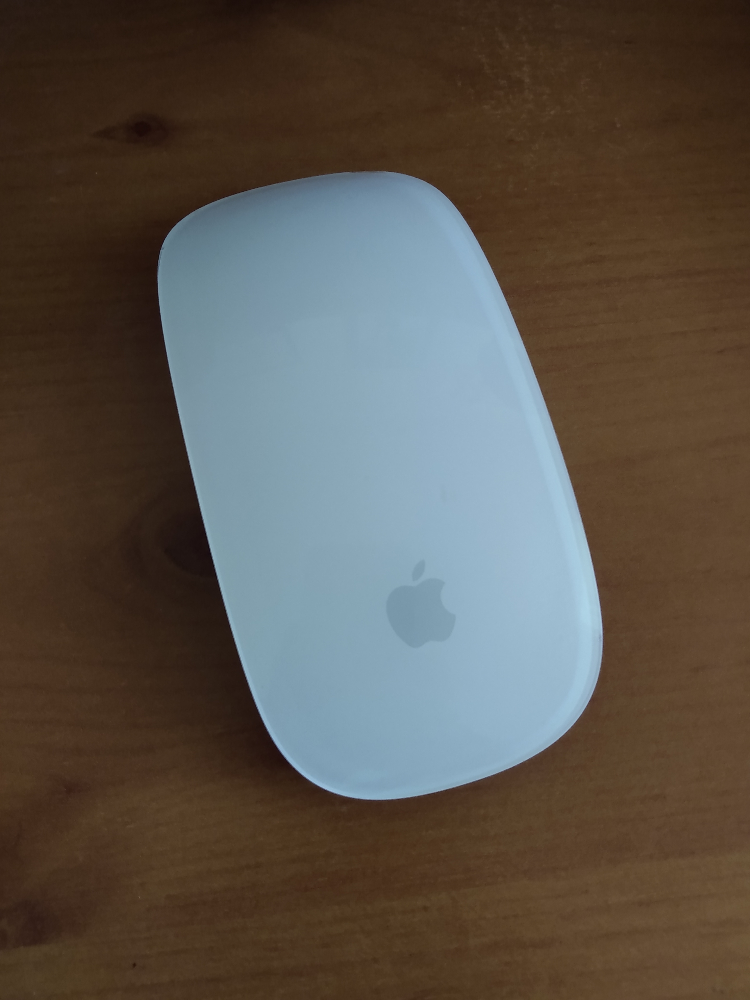

Jan 01, 2026

You're beautiful but I can't work with you.
One of my favourite books for thinking about the topic of interface design is the classic The Design of Everyday Things. I try to set aside time every few years for a re-read, and each time I get something new from it. It's assigned reading for Industrial Design students, and with good reason. It dissects why we might find it easy - or difficult - to interact with our environments and to use the everyday tools that surround us. It is wonderfully scathing in showing examples of dodgy design and makes the reader into a keener observer of the good and bad design choices all around them. You'll never look at a door handle in the same way again.
Disenchanted
I was given an Apple Magic Mouse to go with the Mac I was using at the time. It looks great, right? So sleek, like something from a science-fiction film. The only trouble was, I hated it. I tried to work with the Magic Mouse for a while, but I just didn't take to it. It didn't feel right in my hand and I never got used to the buttons. A bit embarrassed, I ended up returning to my boring, well-worn old mouse.
Back to old faithful.
So why didn't the Magic Mouse work for me? I realised why as I read through the Design of Everyday Things. It explains,
"The human mind is exqusitely tailored to make sense of the world. Give it the slightest clue and off it goes, providing explanation, rationalization, understanding. Consider the objects, books, radios, kitchen appliances, office machines and light switches that make up our everyday lives. Well-designed objects are easy to interpret and understand. They contain visible clues to their operation. Poorly designed objects can be difficult and frustrating to use. They provide no clues. Or sometimes, false clues."
There are no visible buttons on the Magic Mouse and no wheel for scrolling. Like a door without an obvious handle, it relies on your previous experience of using a mouse to make sense of it. You have to map what you know about mouse buttons and scrolling onto its blank surface, in order to use it. I didn't enjoy this, and I also missed the tactile feedback that I used to get from scrolling the mousewheel. It turns out that's quite important to me, especially when working on graphic design or video editing. I'm not ashamed to have returned to my dull old device, with its comfortable size, obvious buttons and nineties-era scroll wheel. Those features are what helped me to use it easily.
Apple and Design
Apple has a long history of being concerned with good design. They are famous for their focus on usability. This talk at an Apple Developer conference by expert Mike Stern is a great example of the kind of solid thinking they usually do in these areas. I often return to it when thinking about user interface design and making apps more accessible.
So they understand the problem. But the company seems to have lost its way a little bit when it comes to hardware. You may recall the controversy when it decided to get rid of the headphone jack on the iPhone 7. I still carry around a headphone adapter so that I can use my favourite (non-Apple) headphones with my iPhone, and things may now have started to swing back in the other direction. And then of course there's the Magic Mouse. I'm not the first person to dislike it.
A common thread in these hardware choices is that they tend to be done for what seem to be aesthetic reasons. The desire to simplify the physical appearance of the hardware to make it look beautifully minimalistic has won out over functionality. Why is that?
To understand this drive to simplify helpful features away, it might be useful to learn a bit more about the history of architecture.
Minimalism
You'll have heard of minimalism. These days it's code for throwing out all your stuff so you can live more simply, but it became a powerful force in modern architecture and design in the early twentieth century.
 By Hans Peter Schaefer - Own work, CC BY-SA 3.0, https://commons.wikimedia.org/w/index.php?curid=52728
By Hans Peter Schaefer - Own work, CC BY-SA 3.0, https://commons.wikimedia.org/w/index.php?curid=52728
Here is an influential example - Ludwig Mies van der Rohe's German Pavilion for the 1929 International Exposition in Barcelona. With stark planes of gleaming glass and marble, it exemplifies his design philosophy of 'less is more' and stands in stark contrast to the lush ornamentation, colour and decoration in the structures of other architects. It looks relatively unremarkable to modern eyes but at the time it was a shocking departure from accepted norms.
Mies pioneered the principle of the 'free facade', now used widely in modern office buildings. Basically, the interior walls no longer needed to do the work of supporting the roof, the support function being transferred to unobtrusive supporting stilts. The walls appear to float or to be made of glass, and they disappeared to give huge open-plan interior spaces. It disconcerted visitors. People were unable to 'read' the building using their existing knowledge of architecture, because it deliberately hid its functionality. It felt as if the roof might fall down and crush them.
Another way
One of my favourite places in the world, La Sagrada Familia. My own photo, CC-BY SA 3.0 if you'd like to use it.
Another architect working around the same time was Antoni Gaudí. His creations also surprised conventional society, but for different reasons.
His designs did not hide support structures or place them in unexpected locations, but worked with the limitations of existing materials in ways that were visible and obvious. Large glass panes strong enough to support a wall or be used as a door were impossible at that time, so Gaudí used doors fragmented by organic shapes in metal resembling the structure of a leaf or spider web. Some saw his work as ugly, complaining that he had made buildings look grotesque, half-melted, like insects, and so on.
Gaudí did not separate interior and exterior with hard planes but intertwined them, deliberately echoing the structure of a forest and with some of the same advantages. His buildings still don't need much air conditioning even in a hot Barcelona summer because of the way they are designed to let air to flow through them, using decorative shutters to shade the rooms. He was ahead of his time in looking for these solutions inspired by nature.
I think you can tell which one I prefer. But Gaudí's way of building did not win. It's rare to find a modern office block without a free facade, and especially rare to work somewhere that isn't open plan.
No room for mistakes or adjustment
To build something designed by Mies and his modernist successors requires painstaking attention to detail.
Charles Jencks, in his 'The Problem of Mies' essay points out
"There is no place for a mistake in his absolute universe, because extreme simplicity makes one hypersensitive to each inch of a structure and the Platonic form, with its transcendental pretension, demands utter perfection."
Later adjustments are very difficult. The outward strength and modernity of these glass-fronted buildings is undermined by how delicate they can actually be.
By Simon Letouze - Own work, CC BY-SA 3.0, https://commons.wikimedia.org/wiki/File:NGC_006_ngc_front_facia_reduced.jpg
People get angry when they realise that despite their looks, modern buildings can be more expensive to maintain than traditionally-constructed ones. The National Glass Centre in Sunderland is a tragic example. From the BBC:
"A spokesman for the University of Sunderland said it had commissioned a "full, up-to-date, independent building survey" in 2022, where external specialists concluded that a multimillion-pound investment would be required to address the longstanding problems with the building."
It is particularly painful that the seamless-looking design of the National Glass Centre, with its modern planes of steel and sheets of glass, is exactly what makes it so difficult to care for. It shone when it was new, but now it looks unlikely to outlive its architect. It will apparently be cheaper to tear it down and rebuild entirely than to fix it.
A Pattern Language
This brings us - rather neatly - back to programming.
 The first book I would save from a house fire
The first book I would save from a house fire
This is my copy of 'A Pattern Language' by Chistopher Alexander, Sara Ishikawa, Murray Silverstein, Max Jacobson, Ingrid Fiksdahl-King and Shlomo Angel. It's part of a series of books on planning and architecture written by their group in Berkeley in the 1970s. It lays out in very practical terms ways to design pleasing spaces. It has recipes for everything from the very large town planning level all the way down to what height you might place a windowsill to give a comfortable window seat. I love it dearly. I have used its suggestions in my daily life and enjoyed the results, and when as a teen I dreamed of becoming an architect the Berkeley group were the ones who I looked up to.
Their ideas have had unexpected resonance in the programming world.
When Object-Oriented programming was emerging as an interesting new way to design systems, Alexander was invited to speak at the OOPSLA (Object-Oriented Programs, Systems, Languages and Applications) conference in 1996.On the podium he looks slightly bewildered and comments,
"I'm addressing a room - a football field! - full of people, and I'm afraid I don't know hardly anything about what all of you do... My association with you, if you want to call it that, began about two or three years ago when a computer scientist called me and said there were a group of people here in Silicon Valley that would pay $3000 to have dinner with me. I thought, what the hell is this!"
He was greeted by programmers very enthusiastic to talk with him about 'design patterns' in software. Richard Gabriel, then working at IBM, was one of the first software engineers to draw links between the architecture of buildings and the design of code. His thoughtful book Patterns of Software: Tales from the Software Community was later published with a foreword by Alexander. Gabriel suggests we:
"find good designers - know them by their works - and study what they do"
This led later down the line to things like the Software Craftsmanship movement and op-eds like this one by Freeman Dyson extolling the union of hand and mind in making useful things. People in software had woken up to the reality that they were practicing a craft, something that was half-art and relied on skills passed down from masters to journeymen.
Why are some programmers interested in architecture? Perhaps we're working on the same problems as architects: making complex systems that people have to live with (and inside of) and adapt in the future.
We must make design choices that won't bewilder users, so that our creations can be navigated easily. Another shared problem is to work out how to make things that can be maintained over time. Systems that appear seamless and beautifully minimal can fall apart if they're constructed in the wrong way. It is usually better to make something messy but adaptable, rather than aim for seamless perfection.
There turns out to be a pretty big overlap between architecture (and its problems) and software engineering (and its problems). It makes reading books from each discipline alongside each other a delight.
When I ran across these ideas in the software world years later they struck a chord of memory in me. I was very amused to find that the holy grail of certain programming greats was a book I already had on the shelf in my study for entirely different reasons. It made me feel at home in software.
So, goodbye Magic Mouse. But thanks for taking me on an lovely tour of my design and architecture bookshelf! Drop me an email if you disagree with me - does the Magic Mouse actually work for you? Have you also been influenced by A Pattern Language?
Jun 24, 2024
 They also serve who only stand and watch construction
They also serve who only stand and watch construction
I'm delighted to say that I recently won a writing challenge, 'Il Campionato Mondiale Di Umari'.
An 'Umarell' is a lighthearted way of referring to elderly men who like to watch construction sites. The practice is apparently so common in Italy that special holes are often included in fences around roadworks to make it easier for these retired guys to enjoy their favourite pastime. But ogling construction work isn't just for retired people! Spencer Wright at Scope of Work explains -
To umarell is to take an interest in the built environment – the environment that our species creates, and in which most of us spend most of our time. An umarell turns their attention to that environment's creation, taking time to appreciate the materials, machines, and muscles from which it emerges. Umarelling is an act of respect and appreciation, and it is for this reason that I am proud to announce the inaugural Campionato Mondiale di Umari – the 2024 World Umarelling Championship.
The championship had three categories: notes, sketches and open text. I won in the open text category with an original poem and was delighted to be sent my own official 'Umarelling' notebook and a T-shirt which I'll wear with pride.
Check out my work and that of the other two winners here!
The challenge was organised by my favourite design and engineering newsletter, Scope of Work, which I've been following ever since I was an undergrad in Manufacturing Engineering. Spencer Wright's newsletter is always one of the things I look forward to most in my inbox. If you like deep dives into how we keep food fresh, the history of soap in a box, or understanding what it takes to put a flamingo inside a beachball you'll definitely enjoy Scope of Work. I can't count the number of times it's introduced me to my latest obsession.
Jun 16, 2022
 I spoke at a virtual conference!
I spoke at a virtual conference!
I was recently invited to speak at Code Newbie's CodeLand 2022. I had a wonderful time at the virtual conference and got the chance to speak with some great people including experts in the field (I was part of a roundtable discussion with Kelsey Hightower, I was starstruck!). Code Newbie's community is a lovely welcoming place for everyone, especially folks who are just getting started in software professionally. I'm definitely interested to go along again next year.
If you'd like to watch my talk, it's still available on demand here
Mar 13, 2021
 He's very new!
He's very new!
I won't be updating this blog for a while as my little one has finally arrived!
We're having a lot of fun (although not a lot of sleep).
May 22, 2020
 Masts of the SS Richard Montgomery. Photo by Clem Rutter, Rochester, Kent CC BY
Masts of the SS Richard Montgomery. Photo by Clem Rutter, Rochester, Kent CC BY
I'd like to introduce you to the SS Richard Montgomery. For those who don't know the story already, it's quite extraordinary.
Towards the end of WWII, a Liberty Ship, the SS Richard Montgomery, ran aground on shifting sands just off the coast of Sheerness at the mouth of the Thames Estuary. She was loaded with over 6,000 tonnes of high-explosive bombs and detonators. Salvage operations managed to remove some of the explosives, but before the ship could be made safe it sank further and salvage was abandoned. The ship and her thousands of tonnes of remaining explosives was then left to sit for over 75 years. She is still there.
One of the most remarkable things about the wreck is her location. She lies in shallow water just 2.4 km from the seaside town of Sheerness. Not only that, but she is less than 200m from a busy shipping lane, and remarkably close to the Grain Liquid Natural Gas Terminal, the largest Liquified Natural Gas facility in Europe.
How dangerous is it?
WWII ordinance turns up every now and then during construction projects. Some unexploded WWII grenades were discovered while building an ice rink in my home town of Cambridge. The discovery triggered a visit from the bomb disposal squad and emergency services, alongside a limitation on flights in and out of Cambridge Airport until the grenades could be made safe.
But the amount of unexploded munitions here is in an entirely different category. There are no clear records of how much ordinance was left on the ship, but according to an official MCA report the ship likely contains more than 9000 explosives including cluster bombs and hundreds of giant 2,000lb 'blockbuster' bombs.It's hard to comprehend their explosive power should they go off.
A New Scientist investigation from 2004 suggests that spontaneous detonation of the entire cargo would hurl a column of debris up to 3 kilometres into the air, send a tsunami barrelling up the Thames and cause a shock wave that would damage buildings for miles around, including the liquid gas containers on the nearby Isle of Grain, which could detonate in turn.
What happens next?
 Suggested locations of new airport in Thames Estuary. By Ordnance Survey with modifications by Prioryman CC BY 3.0
Suggested locations of new airport in Thames Estuary. By Ordnance Survey with modifications by Prioryman CC BY 3.0
Some demolition experts are content to let the wreck lie, hoping that time and tide will reduce the deadliness of her cargo. They argue that any attempt to clear the bombs from the wreck would be riskier than letting her lie. These arguments give the example of the explosion of the Kielce, a smaller munitions wreck which was more than 6km out to sea. A failed salvage operation there in 1967 set off an explosion that measured 4.5 on the Richter scale and damaged property in nearby Folkestone.
However, others disagree and argue that the wreck is actually becoming more dangerous over time. Phosphorous is now apparently leaking from the munitions aboard, evident as flames on the surface of the water where it burns in contact with air. These can sometimes be seen at night by local residents.
Another possibility is a collision. There have already been at least 22 near-misses where shipping traffic only just steered away from the exclusion zone around the wreck in time. One particularly harrowing episode occurred in May 1980 when a Danish chemical tanker, 'Mare Altum', steered aside only minutes before she would have impacted the Montgomery.
There have been persistent questions in Parliament asked about the subject. Recent surveys suggest that the condition of the wreck is rapidly deteriorating, which might lead to a sudden catastrophic collapse. Dave Welch, a former Royal Navy bomb disposal expert, who has advised the government on the SS Richard Montgomery's munitions, says:
"We can’t continue just leaving the wreck to fall apart. Somebody at some point in the next five to ten years is going to have a very difficult decision to make and I would say the sooner it’s made, the easier and cheaper it will be as a solution."
So far, no solution is in sight.
How does this relate to programming, anyway?
Every codebase has its unexploded bombs. Not so potentially serious as the SS Richard Montgomery, perhaps. But our code is out there driving all sorts of things in the real world. If we neglect potentially serious problems, we can harm people just as easily as other kinds of engineers.
Take your bug reports seriously
It can be too easy to dismiss user reports of bugs or accidental misuses of your application. Because we are so familiar with our own code, it can lead to a feeling of contempt for the person who doesn't approach the software in the same way that we do, or have as much knowledge about the underlying structure. And there is of course a natural feeling of defensiveness toward our own work. It can be humbling to find a bug in what you had hoped was well-crafted code, a blow to your ego and confidence as a programmer, perhaps.
This kind of misplaced confidence can be lethal. In the Therac-25 Incidents at least 6 cancer patients were given hundreds of times the desired dose of radiation therapy. This resulted in serious injuries and deaths. The malfunctions were reported early to the manufacturer, who sent engineers to a hospital where one of the lethal accidents occurred. They spent a day running the machine through tests but could not reproduce the critical malfuction, code 54, which only appeared when users typed with a certain fast frequency as experienced operators sometimes could. Because the error that caused the lethal bug was not observed by company investigators, they concluded it was "not possible for the Therac-25 to overdose a patient". It took another tragic accidental death to prove them wrong. This excellent analysis of the accidents dissects the timeline of events and has valuable lessons for us, particularly medical software developers.
We can be falsely confident about our code fixes, too, thinking that they resolve an issue when really they don't. It takes a particular critical, persistent mindset to debug a system well and really fix what the root of a problem was. The excellent rules of thumb in Dave Agans' 'Debugging' book are something I return to time and again when tackling software problems. I encourage you to print out the poster and put it on your wall! One of his key points is that until you can reliably trigger a bug, you don't know what the true cause is or whether a fix has addressed the bug or not. Intermittent faults which only appear under certain conditions, like the problems with Therac-25, can be the hardest things to address.
Listen to the voice of inexperience
Listen to newcomers - interns, new starters, people approaching a piece of the code they haven't worked on before. It's very easy to become habituated to a worrying situation - to live atop an unexploded bomb - and sometimes the only way to snap out of your ingrained habit of dismissing a problem is to listen to someone new worry about it.
I would argue that part of the onboarding process for programmers joining a new team should be to ask them what 'unexploded bombs' they might see in the code. There's usually a "and do you have any questions for us" stage in an internship check-in, for instance, but we rarely take the feedback we recieve this way seriously, or get enough detail to understand what about the codebase might be confusing or painful to work with.
Doing a 'Code Walk' structured walkthrough of the code can be very illuminating. (I highly recommend this talk by Mary Chester-Kadwell - it has really shaped the way I teach and learn about new codebases). In the process, pay attention to the questions your new team-mate asks and reflect on what they say about the health of the different parts of your codebase. Is there anything where when you explain it aloud, it seems convoluted and awkward, or counter-intuitive? Anywhere you particularly wish there was documentation to show your new recruit? Those places may be where problems are lurking.
Pay attention to the jokes
 Mural by Dean Tweedy made for the Promenade Arts Festival in 2015 - photo Andy Hebden
Mural by Dean Tweedy made for the Promenade Arts Festival in 2015 - photo Andy Hebden
Matt Brown, chairman of Sheerness Enhancement Association for Leisure, condemned the mural in the local newspaper, saying:
"If I was a family visiting, whether I knew about the Montgomery or not, I wouldn’t want to be sitting at the leisure park with the kids being reminded you have those explosives out there."
The artist rebutted: "I wanted to make people aware of the Montgomery as it’s part of Sheerness. Some people would like to deny its existence."
The mermaid makes some local people uncomfortable because it reveals a truth about their town they'd rather not have to acknowledge - the ever-present danger to their lives from the offshore explosives. For a certain kind of authority figure, the reminder of a dangerous situation is worse than the actual danger, because without the reminder they can continue to live their lives without having to address the elephant in the room.
 This xkcd strip about data pipelines makes me laugh - but it also makes me think about the robustness of my code.
This xkcd strip about data pipelines makes me laugh - but it also makes me think about the robustness of my code.
Sometimes the equivalent of a Sheerness Mermaid Mural is the only way you can spot a problem that's become engrained in the way your code is put together. Is there a particular XKCD or Dilbert cartoon that seems to epitomise the bugs and problems you're encountering? Perhaps all the developers working on a particular part of the codebase have a set of in-jokes describing the way a certain class behaves itself? A kind of gallows humour about how a module is annoying to use, something that makes you cringe because it's a little too accurate?
These are all clues to what might be underlying dysfunctions of your code. By paying attention to them, you might be able to spot an unexploded bomb and defuse it, before your users discover it and blow things sky-high.
Sep 16, 2019
This is a write-up of a workshop I've given at CamPUG and PyCon UK 2019. It was a lot of fun to deliver, and my participants came away with their own mini-games written in Ren'Py. I was impressed by the range of creative stories, everything from getting lost in Cardiff, storming Area 51, coaxing a grumpy cat, visiting a music festival, going to space, defeating animated fleas, visiting every pub in Cambridge, a child's guide to the Divine Right of Kings, interactive graffiti and more!
I hope this post will be useful as a reference for workshop participants and those who couldn't make it along.
What is Interactive Fiction?
You might be familiar with the concept of interactive fiction from "Choose Your Own Adventure" books.
Ever since computers came on the scene there has been interactive fiction here, too. Zork, one of the earliest examples, is a dungeon-crawling game where the player explores The Great Underground Empire by typing text commands.
Using later tools like Parchment and Twine people are still creating these text-based interactive fiction games. A text-based game I've enjoyed recently is Moonlit Tower by sci-fi author Yoon Ha Lee.
Visual Novels are a genre of interactive fiction that combines pictures and text as a storytelling tool. They originated in Japan and many famous examples such as Fate/Stay Night and Symphonic Rain are Japanese. These games are often romance or relationship-themed, each path perhaps leading to a relationship with a different character.
Ren'Py

Ren'Py is a visual novel creation engine written in Python. It has its own syntax and style, but also allows you to embed pure Python for more complex gameplay mechanics.
It is cross-platform and works on Mac, Linux and Windows. All that you need alongside it is a simple text editor that can convert tabs to spaces, such as gedit.
What can you do in Ren'Py?
Label Jump For Branching Stories

I would humbly suggest my own game The Road Not Taken as a useful introduction to the label / jump mechanic. Take a look in the script.rpy file to follow how the game works. It demonstrates how menus work in the game and how you can use them to move to different choices, similar to a GOTO statement. It also includes an example of embedding music within gameplay to add a mood to a scene. Feel free to copy and modify it as a basis for your own games.
Custom GUI

Hotel Shower Knob, a game where you have to puzzle out an unfamiliar hotel bathroom to take a shower, is a good example of a custom GUI. Inside options.rpy the creator replaced the usual cursor with a custom image of a hand:
## The mouse clicker thingy.
define config.mouse = { 'default' : [ ('cursor.png', 66, 95)] }
This makes for a unique visual experience. As the hand is Creative-Commons licenced, you could use it in your own games, too!
Embedded Python

Because Ren'Py is written in Python (2.7, if you're interested) it's easy to embed Python statements within it to acheive more complex effects such as creating mini-games. There are two ways to do this - prefixing single lines with $ or using an indented block with the python: statement. I used python: statements within Ren'Py to create Card objects for my game Two Worlds.
The key thing to notice is the definition of the Card class:
# Define the card objects used to play the games with
init:
python:
flowers = ["card-front-land-flower%d.png" % i for i in range(1, 3)]
class Card(object):
def __init__(self):
self.face_up = False
self.selected = False
self.number = 0
self.coords = [0, 0]
self.back = "card-back-land.png"
self.front = flowers[0]
self.paired = False
@property
def coord_text(self):
return "{}, {}".format(self.coords[0], self.coords[1])
This happens during the init: block, before the game starts, so it is available from the beginning. I subsequently used this in the sea_game.rpy and land_game.rpy files using the ui.interact() statement and action If to connect it with Ren'Py responses to on-screen clicks.
Persistent Data
Another useful trick is the ability to store persistent data between plays of the game.
 An example from Long Live The Queen
An example from Long Live The Queen
This allows more satisfying gameplay such as unlocking new routes after a complete playthrough, and keeping track of player stats like Strength or Skill. Anything that can be pickled is suitable for this treatment. A simple example:
if persistent.secret_unlocked:
scene secret_room
e "I see you've played before!"
To unlock this path the user must hit a piece of code that sets $persistent.secret_unlocked = True
persistent is a special keyword in Ren'Py, so you shouldn't use it for anything else. Unlike other variables, if you haven't yet initialised it when you reach the if statement Ren'Py won't complain.
Useful sources of free images and sounds for your games
There are various community projects to collect images and sound to use in games with Creative Commons or similar licences.
I've found px here a useful collection of images, particularly photos.
I used Fraqtive to create the card images and backgrounds for Two Worlds.
Useful sound sources include Free Music Archive and for sound effects, Free Sound
Example games written in Ren'Py
Benthic Love – Michaela Joffe, Sonya Hallett
Hotel Shower Knob – Yoss III
Death And Burial Of Poor Cock Robin – Lernakow
Long Live The Queen – Hanako Games
And check out the NaNoRenO game jam each year during the month of March – or better still, take part!
Feb 10, 2019
I recently started to learn about flex and Bison - a set of parser creation tools for C, C++ and Java. By specifying the grammar and rules for parsing inside two files, blah.y and blah.l, the flex and bison command-line Linux tools will auto-generate an appropriate parser in your chosen language. As you might imagine, this is very handy.
Since it's generally better to show rather than tell when it comes to software tools, here's a toy project I've been playing with in which I'm using them to parse GCODE.
The flex part is what's called a lexical analyser - it uses regular expressions to split the input into tokens. These tokens are used to generate a parser with the Bison part, which is the grammar that tells the parser what do do when certain tokens are read side by side.
What particularly struck me about these tools was just how old they are.

Bison is a descendant of a tool called Yacc (Yet Another Compiler Compiler) which was developed by Steven Johnson working for Bell Labs back in the early 1970s, inspired by Donald Knuth's work on LR parsing. It has been rewritten in many different languages over the years, but the most popular implementation these days is probably Bison, which dates back to 1985, when it was worked on by Robert Corbett. Richard Stallman (yes, that Richard Stallman) made the GNU-Bison tool Yacc-compatible.
Flex meanwhile was written in C by Vern Paxson in 1987, tranlating an older tool called Lex. Lex was originally written by Mike Lesk and Eric Schmidt, and described in a paper by them in 1975. It was initially written in ratfor, an extended version of Fortran popular at the time.As they point out in the paper:
"As should be obvious from the above, the outside of Lex is patterned on Yacc and the inside on Aho’s string matching routines. Therefore, both S. C. Johnson and A. V. Aho are really originators of much of Lex, as well as debuggers of it. Many thanks are due to both. The code of the current version of Lex was designed, written, and debugged by Eric Schmidt"
As you might expect of such venerable tools, they have some excellent tutorials on their use, including an O'Reilly book "flex & bison" - which itself is the "long awaited sequel" to the O'Reilly classic, "lex & yacc". Those who teach in depth about these tools or about parsing are in some danger of re-writing them even more nicely in a favourite language - the linked example is PLY, which was originally developed in 2001 for use in an Introduction to Compilers course where students used it to build a compiler for a Pascal-like language.
I'm fascinated by how tools like this have survived and thrived over what, to computer science, is an enormous amount of time. Perhaps it is because they are beautiful - they have some inherent quality that shines out, no matter what language they happen to be in. I was re-reading the interview with Fran Allen in 'Coders At Work' about beautiful code, and it really resonated.
Allen: One of the things I remember really enjoying is reading the original program - and considering it very elegant. That captured me because it was quite a sophisticated program written by someone who had been in the field a while - Roy Nutt. It was beautifully written.
Seibel: What makes a program beautiful?
Allen: That it is a simple straightforward solution to a problem; that has some intrinsic structure and an obviousness about it that isn't obvious from the problem itself. I picked up probably a new habit from that of learning about programming and learning about a new language by taking an existing program and studying it.
Seibel: How do you read code? Let's say you're going to learn a new language and you find a program to read - how do you attack it?
Allen: Well, one example was one of my employees had built a parser. This was later on for the PTRAN project. And I wanted to understand his methods. It's actually probably the best parser in the world - now it's out in open source, and it's really an extraordinary parser that can do error correction in flight. I wanted to understand it, so I took it and I read it. And I knew that Phillipe Charles, the man who had written it, was a beautiful programmer. The way I would approach understanding a new language or a new implementation of some very complex problem would be to take a program from somebody that I knew was a great programmer, and read it.
Dec 31, 2017
My colleagues and I were discussing legacy code the other day. Someone gave the pretty common opinion that, if there was time, they would of course completely re-write all the legacy code they came across, from scratch. But, since this is not an ideal world and time is limited, they would settle for refactoring what they could. It got me thinking about how my own attitude toward legacy code has changed over time, and why that is.
Indiana Jones and the Lost Code
I spent one summer at university working on a classic legacy code problem. A scientist had written a large piece of Fortran 95 to simulate a manufacturing process for my employers. He had long since retired and there was no way to contact him to ask about his work. As an intern I was asked to add a little bit of extra functionality. They were still using the code and found it reliable, but wanted to add a feature. I felt like an archaeologist, dusting off terse variable names and cryptic comments, trying to understand not only this code but the complex processes it was simulating, too. It was very difficult to get anywhere.
 I wonder if I can replace this function without adding test coverage?
I wonder if I can replace this function without adding test coverage?
My initial reaction - rewrite it! I think most programmers share this instinct. My idea was to tear it down completely and rebuild it, preferrably in a different, more modern language. Then, I felt, I could add the features that were needed. But my manager was adamantly against this. As a summer intern, I would leave soon anyway. If I rewrote the code in another language, where was the benefit to the company? From their perspective, they already had a tool that worked fine. They just needed someone to understand what they already had and improve it a bit. At the time I was frustrated by this. I would tell others the tale with a wistful air - "If only I had had the time to rewrite it properly" I would think, "it would have been so much better". But would it have?
Why Rewrite Code?
I've come across a few different reasons for re-writing code completely. None of them really convince me of their merits anymore.
- To write it in a new language.
The new language is considered to be 'better' - it has features you want, or the old language is considered passe. Fortran 95 certainly wasn't the best language to be writing new code in anymore! For one thing, there was a severe restriction on variable and routine name lengths - in order to maintain backward compatibility with earlier versions of the language, none of the variables was over 6 characters in length, which didn't aid readability. But most cases aren't as clear-cut as this - I think most people wouldn't choose to re-write a large C program in Rust even if they think Rust is a superior language in some respects.
No-one can figure out how the old code works, so we have the idea to learn by doing and completely rewrite it. It's certainly "easier to write code than read it." This is even true of one's own code - returning to something I wrote six months ago, I realised to my regret I left insufficient comments and good names behind - so I had to learn how to understand my own code again, refactoring some of the names once I had worked out what I was doing. But by the same token, if you re-write others' code, there's no guarantee it will be any more readable to the next person - even to yourself, later on. Taking more time to read and understand what the existing code is doing may end up being more valuable. Perhaps one of the problems with this approach is that programmers feel guilty for spending some of their work time 'just reading' other people's code. It doesn't feel like a productive activity in the same way as re-writing. Reading old code just produces understanding in your mind, no tangible output.
- You don't trust the people who wrote the code.
'Not Invented Here' syndrome. Especially since many programmers have poor code reading skills it's difficult to relax and trust unknown programmers. We can't easily just grok their code and be reassured that it's solid - so fear creeps in and the idea of a complete re-write or making our own version from scratch seems more appealing. If your instinct is not to trust the unknown, it becomes even harder:
"You can’t look down on someone when you read their code. If you don’t respect the person writing the code, you won’t be able to apply the energy needed to understand it." - Keiichi Yano @CaptivNation
In the Python world this has mostly been overcome when dealing with third-party modules - for some reason, if you can pip install a library function to do what you want, there isn't the same need to question and look under the hood in mistrust at how it does what it does. The module is generally treated as a black box, whose documentation is all you need to work with it. Perhaps this trust has been built up in the Python community over time and isn't readily extendable to other domains - it's certainly a large factor in the appeal of Python as a language.
And finally the real reason, the one we feel deep-down in our bones: the old code looks bad - it's flaky, it doesn't have any test coverage, the relationship between the parts looks crazy. When you read it, you sometimes want to laugh out loud - it's a big hot mess. There is a strong temptation to start again from scratch out of an aesthetic instinct for perfection.
Why Keep Code?
Joel Spolsky of Joel on Software fame has called rewriting source code from scratch "the single worst strategic mistake that any software company can make". Spolsky uses the example of Netscape 6.0 to demonstrate why as a corporate strategy, complete re-writes are almost never a good idea. They tend take longer than anticipated (because people are bad at working out how long it will take), and burn time and resources for no appreciable reward until the very end when the new code is ready - by which time, a competitor has probably caught up to you and eaten your lunch. There are almost no commercial examples where a complete re-write turned out to be a good idea. Sometimes as a programmer you need to 'zoom out' and take a more general view of your company's trajectory, and how time spent on re-writes and refactoring fits into it.
Of course, companies also need to take care not to pressure their programmers into behaving in this negative way. If you're rewarded based on new code output or some other metric that doesn't take into account the increase in understanding from reading others' code, it can be hard to fight the instinct to re-write code more than you should. Managers should try to grow their programmers' understanding of the existing codebase and allow time for them to read code as an activity of value in itself. Taking a leaf from Peopleware and accepting that 'human resources' are individuals who are not interchangeable and who contain valuable institutional knowledge should help here.
As Joel also points out, 'hairy' legacy code functions embody years of bug fixes and reactions to specific situations. But not only that. Legacy code often embodies knowledge about a process, knowledge that is very difficult to recapture. The writers might have left the company, or been run over by a bus! Re-writing doesn't recapture all the nuances of the understanding embedded in the old codebase, and can leave important institutional knowledge behind. This knowledge might not be documented in any other way. I've lost count of the times an old comment or variable name has led me in a valuable direction to a deeper understanding of changes to our hardware, for example. This sort of thing would be lost, throwing the baby out with the bathwater, if the code had been completely re-written by someone who didn't keep the old comments they didn't understand.
- Refactoring can give the best of both worlds
It can be difficult to get the balance right between too many re-writes on the one hand and leaving flawed, buggy existing code alone on the other. My own experience at CMR has definitely taught me the value of keeping and improving on an existing codebase. Through resisting the temptation to stop and completely re-write parts of the Python codebase, we have come further and faster than we could have done otherwise, and managed to still continue improving as we go along. Refactoring is sometimes used as a synonymn for re-writing, but it's actually a different approach. Refactoring values existing code and makes the base assumption that it is valuable and should be preserved. By adding tests, old code can be refactored with the confidence that bugs won't be introduced. Tweaking variable names and adding explanatory comments is generally harmless and can be very valuable. In this way, incrementally refactoring old code can give excellent results, in less time than a complete rewrite. Your Code as a Crime Scene explains how making improvements to the code can and should be done in a targeted way, rather than by hunches. By focusing on areas with the highest cyclomatic complexity and churn, we direct our energy where it produces the most valuable results. This means the majority of the existing legacy code can be left alone, while still significantly improving the functionality and test coverage.
A Book Recommendation
In the course of my research for this post I came across Code Reading, a book about precisely the discipline reading legacy code in order to maintain it and add features. This looks to be a great primer on a neglected skill for programmers. I plan to read it myself and leave a review here in the New Year.
Oct 30, 2017
I spent the last few days at PyCon UK, and thought I'd write a post about my experiences there. It was my first time at the conference and I thoroughly enjoyed it, as you can probably tell from the liberal number of exclamation marks scattered through this post.
I gave a talk!
On the first day of the conference I spoke about Python As a Second Language. The organisers put me in the Biggest Room so I had to fight off some pre-talk nerves,
but I was glad to have the chance to do it and got some lovely feedback afterwards. Thanks again to Emma Gordon for encouraging me to give it a go and push my comfort zone! Doing a talk on Thursday also meant I was free to enjoy the rest of the conference without worrying, which I definitely recommend.
For those who are interested, a video of my talk is now up on YouTube!
I went to talks and workshops!
The conference was full of great talks and sessions, so this is just a small sampling of what I particularly remember enjoying. Of course, I'd like to give a shout-out to my colleagues Emma Gordon and Jan Chwiejczak who respectively gave the very silly and fun Python Spelling Bee, and a (very oversubscribed) workshop on Python Bytecode & lavishly illustrated talk on the Art of Testing.
-
Unsafe At Any Speed Rae Knowler made some great points about dangerous library defaults, illustrated with scary examples from the wild. I'll be sure to use PyYAML.safe_load() rather than load() from now on...!
-
Shaping the World David McIver's keyote was thought-provoking and fascinating, not just about software, but ethics, history and human interactions - the sort of thing Stuart Wray would probably enjoy.
-
Docs or it didn't happen! I was encouraged to join the Documentarian Club by Mikey Ariel, who gave an inspiring talk about why good documentation is so important.
-
Software's Seven Deadly Wastes Jez applied the Toyota Production System's 'Seven Wastes' concept to software engineering beautifully - pleasing my manufacturing engineering heart and giving me some food for thought.
-
Circumnavigating the Antarctic with Python and Django A fascinating talk that cast a light on the challenge developing with no (or a very patchy) Internet connection. What, no googling for StackOverflow posts?! Carles and Jen managed data for 22 scientists on a trip circumnavigating the Antarctic, and built them some useful tools as well like an intranet 'Facebook' and web portal to enter their latest data.
-
The micro:bit talks I discovered from the team at the micro:bit foundation how the BBC micro:bit is being used by teachers and for STEM outreach. It's a great project and it sounds like it's already having a lot of success getting kids into learning to code in an accessible way.
-
Choo choo! All aboard the Data Train! It turns out there is a lot of open data available from TfL and National Rail about train movements in the UK. The talk went by quickly but I'll definitely be rewatching to get inspiration for my next project!
-
Lightning Talks One of the highlights of the conference was the range of lightning talks at the end of each day. Among much else they gave me a great brownie recipe, book recommendations and a moment of meditation calm. A particular favourite was the children's lightning talks - they were so confident speaking about their projects, it was lovely to hear.
The nice thing about PyCon UK is that they video all of the talks in the Assembly Room, so I'll be able to go back and watch the ones I missed over the next few weeks, and learn more from the ones I went to.
I didn't take part in many workshops as I was busy manning the CMR stall (we were one of the sponsors so were giving away some free trinkets). I did really enjoy Alex Chan's A Plumber's Guide To Git workshop - I think it really helped unpack the inner workings of Git for me. At the end I started to understand what's going on 'under the hood' when I git add and git commit and it's really neat.
I got swag!

As well as this snazzy pair of Python socks as a thank-you for giving a talk, I also picked up a free BBC micro:bit delightfully packaged in a sweetie-bag and enjoyed playing with it. For such a small bit of kit is has a surprising range of functions, including an accelerometer, 25 LEDs with variable brightness, two buttons and some I/O. I look forward to using it for embedded projects!
I met new people!
One of the best things about PyCon was a chance to meet people using Python from around the UK (and further afield). It was inspiring to see how the language is being used by all sorts of folks. Everyone was friendly and welcoming, and it was a great place to give a talk. I also got the chance to spend more time getting to know people I already was acquainted with from CamPUG, the Cambridge Python Users Group, and had some really interesting discussions.
If anyone is thinking of going but isn't sure if it's for them, I'd really reccomend giving PyCon UK a try - the environment is relaxed and friendly, and the organisers try hard to make everyone feel welcome and included. I'll definitely be coming back next year!
Apr 18, 2017
'Peopleware' is a surprising book. You pick it up expecting a dry tome about (as the subtitle says) productive projects and teams. I only started to read it on the recommendation of a friend, and I'm so glad I did. It's a classic of software development for a reason. It grips you from the very first page as the authors Tom deMarco and Tim Lister lay out a problem familiar to everyone at work - "politics" - and what can be done about it. Peopleware is by turns scathing, hilarious, and wildly optimistic about making the workplace somewhere that's actually fun to be. It's stuffed with war stories that ring very true to anyone who's been stuck in a dysfunctional work environment. Peopleware is everything you hope a project management book could be, and more. Peopleware even recommends my favourite book of all time, 'A Pattern Language' (I once dreamed of becoming an architect - this book was the wellspring of that desire) as a sourcebook for designing a good work environment. I finished Peopleware in a single delighted afternoon.
 Here's my mindmap of the first few chapters.
Here's my mindmap of the first few chapters.
"But Hannah!" you say (and since I'm writing this, I can make you say what I want), "This book was written in the Eighties! It uses COBOL as an example of a modern language! How can I take any of its advice seriously?" To which I would reply, as Peopleware does - You are suffering from the High Tech Illusion, which is:
The widely held conviction among people who deal with any aspect of new technology (as who among us does not?) that they are in an intrinsically high-tech business. They are indulging in the illusion whenever they find themselves explaining at a cocktail party, say, that they are "in computers", or "in telecommunications," or "in electronic funds transfer." Just between us, they usually aren't. The researchers who made fundamental breakthroughs in those areas are in a high-tech business. The rest of us are appliers of their work. We use computers and other new technology components to develop our products or organise our affairs. Because we go about this work in teams and projects and other tightly knit working groups, we are mostly in the human communication business. Our successes stem from good human interactions by all participants in the effort, and our failures stem from poor human interactions.
Even from that small excerpt, you can discern the warm, conversational and down-to-earth style of the book, and the rational sense it makes. Of course it's still relevant today - human interaction hasn't changed very much since the Eighties (or since the dawn of time). It dissects the multifarious ways workplaces can become dysfunctional (beware the Furniture Police!) and then lays out ways to cultivate jelled teams - groups of people excited to work together, who can focus at work, and who create amazing things.
Peopleware is such a good book people are still talking about it, elaborating on it and recommending it today, thirty years after it was written. I discovered after I read it that it's the first book on Joel on Software's Programmer's Bookshelf. Joel says, "I can't recommend this book highly enough. It is the one thing every software manager needs to read... not just once, but once a year." It's also one of Kevin Kelley's 'Cool Tools'. It's that kind of book.
Don't just take my word for it. Go and read Peopleware! It'll be time well spent.